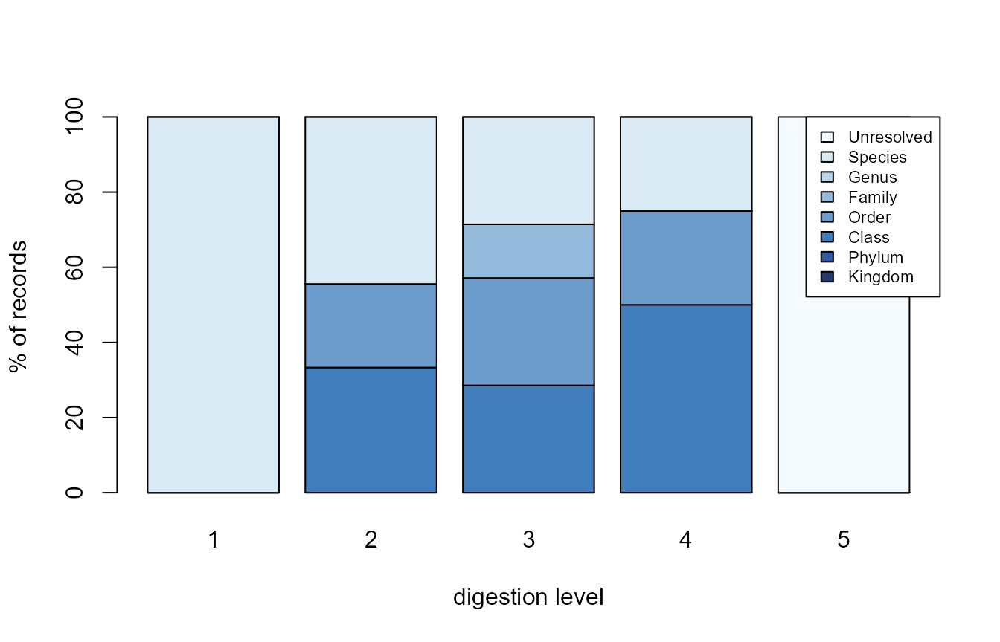

Diet identification is not uniform: heavily digested prey can only be
resolved to coarse ranks. If that bias is hidden, a diet description
silently over-represents whatever is easy to identify.
dv_digestion_diagnostic() makes it explicit.
library(DietView)
dat <- read.csv(system.file("extdata", "dietview_example.csv", package = "DietView"),
na.strings = c("NA", ""))
lin <- read.csv(system.file("extdata", "dietview_example_lineage.csv", package = "DietView"),
na.strings = c("NA", ""))
spec <- dv_spec(predator = "predator_species_common_name", stomach = "stomach_id",
prey_id = "aphia_id", prey_name = "verified_name",
weight = "prey_weight", digestion = "digestion_level_id",
covariates = c("period"))
prep <- dv_prepare(dat, spec, taxonomy = "table", lineage = lin)The diagnostic
For each digestion level, the share of records (and of weight) whose finest resolved rank is Kingdom, Phylum, …, Species, or Unresolved:
diag <- dv_digestion_diagnostic(prep)
head(diag, 12)
#> digestion finest_rank n_records weight p_records p_weight
#> 1 1 Species 2 9.0020 100.00000 1.000000e+02
#> 2 2 Class 3 0.5128 33.33333 1.433491e+00
#> 3 2 Order 2 0.1100 22.22222 3.074962e-01
#> 4 2 Species 4 35.1500 44.44444 9.825901e+01
#> 5 3 Class 2 0.2010 28.57143 9.662997e-01
#> 6 3 Order 2 0.4500 28.57143 2.163358e+00
#> 7 3 Family 1 0.0500 14.28571 2.403731e-01
#> 8 3 Species 2 20.1000 28.57143 9.662997e+01
#> 9 4 Class 2 8.0200 50.00000 8.003193e+01
#> 10 4 Order 1 2.0000 25.00000 1.995809e+01
#> 11 4 Species 1 0.0010 25.00000 9.979044e-03
#> 12 5 Unresolved 2 1.6000 100.00000 1.000000e+02Reading the bias
As the digestion level increases, mass shifts away from Species toward the coarse ranks and “Unresolved”. A dependency-free stacked bar makes the shift visible:
m <- xtabs(p_records ~ finest_rank + digestion, data = diag)
barplot(m, col = grDevices::hcl.colors(nrow(m), "Blues"),
legend.text = TRUE,
args.legend = list(x = "topright", cex = 0.7, bg = "white"),
xlab = "digestion level", ylab = "% of records")
Splitting by a covariate
Pass by = to see whether the bias differs across, say,
periods:
head(dv_digestion_diagnostic(prep, by = "period"), 12)
#> digestion by finest_rank n_records weight p_records p_weight
#> 1 1 2004-2006 Species 1 0.0020 100.00000 100.0000000
#> 2 1 2018-2019 Species 1 9.0000 100.00000 100.0000000
#> 3 2 2004-2006 Class 3 0.5128 60.00000 3.7670428
#> 4 2 2004-2006 Species 2 13.1000 40.00000 96.2329572
#> 5 2 2018-2019 Order 2 0.1100 50.00000 0.4963899
#> 6 2 2018-2019 Species 2 22.0500 50.00000 99.5036101
#> 7 3 2004-2006 Class 2 0.2010 50.00000 3.7563072
#> 8 3 2004-2006 Family 1 0.0500 25.00000 0.9344048
#> 9 3 2004-2006 Species 1 5.1000 25.00000 95.3092880
#> 10 3 2018-2019 Order 2 0.4500 66.66667 2.9126214
#> 11 3 2018-2019 Species 1 15.0000 33.33333 97.0873786
#> 12 4 2004-2006 Class 1 8.0000 50.00000 80.0000000Making this bias visible is the point: it is exactly the information a functional prey grouping would smooth over.